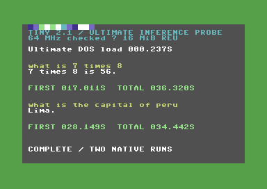
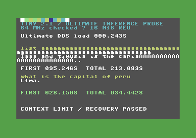

Tiny 2.1 for the C64 Ultimate
Version 0.6 runs WollyMonjac’s Tiny 2.1 checkpoint on a physical C64 Ultimate using 6502/6510 assembly. The Ultimate’s 64 MHz turbo mode runs the transformer, and a 16 MB REU holds the model and attention history. Load the model into REU from the Ultimate menu, then run the PRG from the same menu. The console verifies and reuses the preloaded model.
Required hardware: 64 MHz C64 Ultimate and 16 MB REU.
Quick start and download · Technical details · GitHub Pages
Video
Watch the C64 Ultimate demo on YouTube
Examples
| Type this question | Answer | Measured time at 64 MHz |
|---|---|---|
what is 7 times 8 |
7 times 8 is 56. | 36.321 s |
what is the capital of peru |
Lima. | 34.442 s |
On the same Ultimate, version 0.6 completed these prompts about 10.5% faster than the previous wide group-four build. The model generates text one character at a time. It works best with short questions, and its answers can be wrong.

What the model was trained on
The upstream Tiny 2.1 README describes a small question-answering model trained on roughly 3,500 facts, each asked in several wordings. The release includes the trained checkpoint and inference code. A complete training corpus and source list are unavailable in the upstream release, so the exact facts and topic coverage are unknown.
Questions from the C64 demo
The physical C64 Ultimate recording includes vocabulary, grammar, translation, geography, science, literature, computing, and math. These are the answers captured for the exact prompts shown.
| Question as entered | Answer from the C64 |
|---|---|
give me a synonym for happy |
Glad. |
what is the plural of mouse |
Mice. |
translate dog to spanish |
Dog in Spanish is perro. |
what is the capital of japan |
The capital is Tokyo. |
what planet is known as the red planet |
It is Mars. |
what do bees make |
Honey. |
who wrote hamlet |
William Shakespeare. |
what is the chemical symbol for gold |
It is Au. |
how many bits in a byte |
A byte has eight bits. |
what is the square root of 81 |
9. |
Screenshots


Credits and license
The original model, checkpoint and Pentium/486 DOS implementation are by the WollyMonjac/Tiny-2.1 project. This project adapts that checkpoint for the C64 Ultimate. The C64 port is MIT licensed. Peddle keeps its own MIT notice. The port’s license covers its own code and documentation.